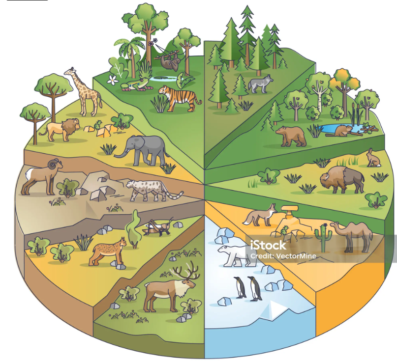
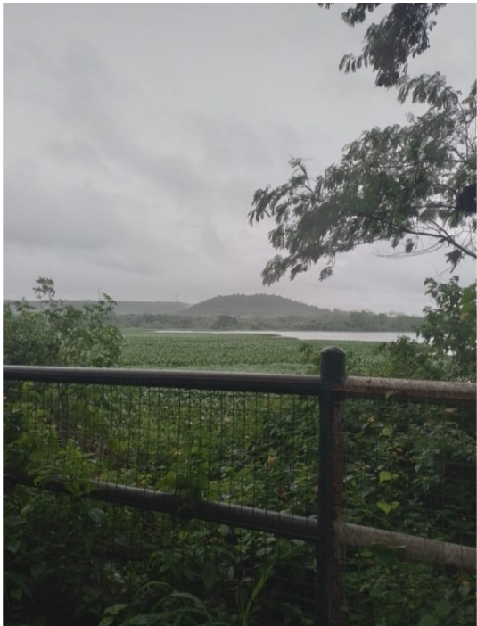
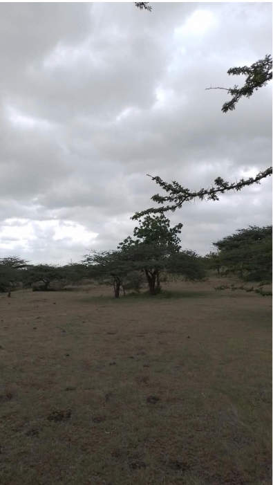
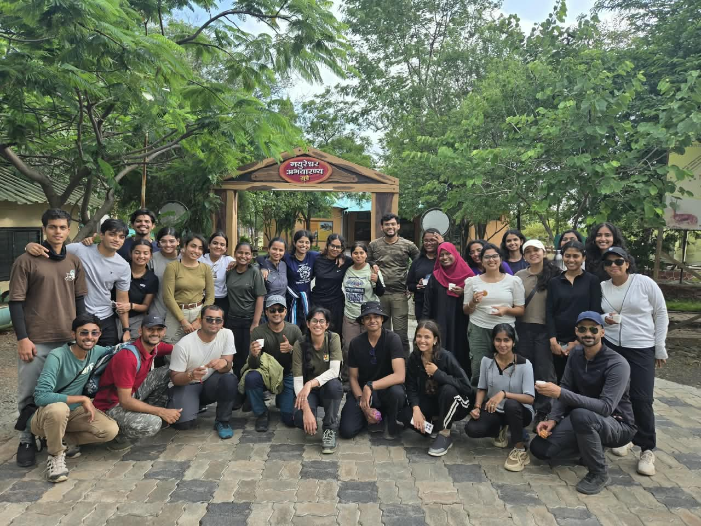
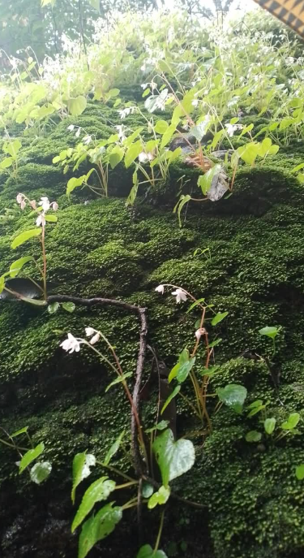
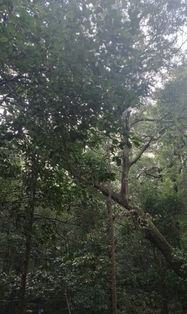
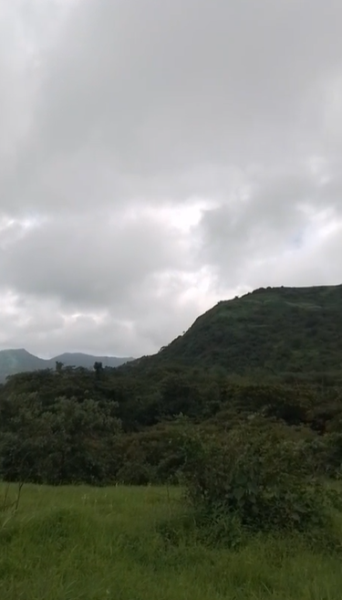
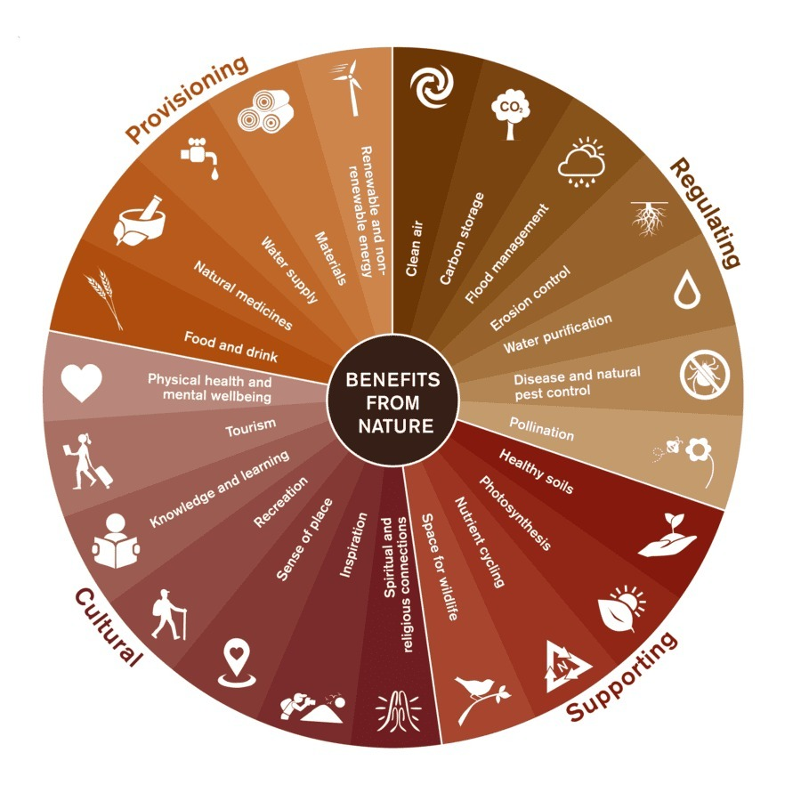

EST 1101 ePortfolio Reflections
ECOLOGY • EVOLUTION • CONSERVATION
Reflecting on structure-function relationships in ecosystem ecology, trophic energy transfers, and biogeochemical nutrient cycling.
Diversity: Refers to species abundance and evenness.
Richness: Refers to the total number of distinct species in a given community.
Global forest classifications utilize indices like the Holdridge Life Zone model, governed by Annual Precipitation, Humidity, and Temperature. Higher environmental thresholds set limits, while lower values restrict species availability.
Figure: 10% Energy Transfer Efficiency across Terrestrial Trophic Levels.
Exploring how evolutionary pressures, genetic variations, and geological isolation shape biodiversity patterns.
Allopatric Speciation: Physical/geographic barriers isolate populations, causing them to evolve differently.
Peripatric & Parapatric: Speciation across specific peripheral niches or adjacent borders.
Sympatric Speciation: New species arise within the same geographic region due to environmental gradients, food specialization (e.g., Darwin's finches with varying beak sizes), or accidental mutations.
Taxonomic Relict: Only a specific subset of a lineage survives while relatives go extinct due to climatic pressures.
Geographic Relict: Species formerly widespread now restricted to small isolated pockets.
Climatic Relict: Persistence driven by microclimate controls (sea proximity, air currents, temperature).
Simple organisms with shorter generation times (e.g., mosquitoes) adapt and undergo rapid evolutionary turnover much faster than mammals, which have longer generation cycles and lower susceptibility to immediate changes.
Specific physio-climatic conditions foster genetic variations, supplying the resilience needed to survive environmental shifts. Introduction and conservation programs aim to preserve varied gene pools to buffer against population bottlenecks.
Understanding how Earth's tectonic dynamics and environmental stability govern species distribution across horizontal and vertical gradients.
Alfred Wegener's Continental Drift theory and plate tectonic boundaries (Convergent like the Himalayas, Divergent like the East African Rift Valley, and Transform like the San Andreas Fault) dictate global biodiversity distribution and mountain formation.
Biodiversity patterns are primarily driven by environmental stability. Unstable vs. stable biogeographic factors establish distinct horizontal and vertical species gradients across ecosystems.
Through our field visits we also got a clearer picture of the three very different ecosystems and got to understand their main characteristics, adaptations and threats as well as how they differ from each other.
Pashan lake is an artifical that serves as a rich ecological hotspot for various migratory birds.
Main Characteristics: An artificial wetland/reservoir ecosystem characterized by shallow lentic waters, emergent aquatic macrophytes, and rich riparian zones serving as a crucial habitat for resident and migratory avifauna.
Adaptations: Waterbirds display specialized bill morphologies and wading structures; aquatic plants exhibit aerenchyma tissues for oxygen diffusion in waterlogged anaerobic soils.
Threats & Thresholds: Urban encroachment, domestic sewage influx, and invasive weed proliferation. Ecological Threshold: Nutrient loading past the assimilative capacity triggers sudden anoxic conditions, causing severe algal blooms and widespread fish kills.

The grassland ecosystem in Supe has loose top soil due to low rainfall and aridity along with the basaltic rock below it that has poor moisture retention and surface which does not support any major trees and thus has soil that gets eroded easily.
Main Characteristics: Semi-arid scrub forest and tropical dry grassland ecosystem dominated by thorny bushes, grasses, and open plateaus supporting specialized herbivores like the Indian Grey Wolf and Chinkara.
Adaptations: Flora exhibits deep root systems and succulent/thorny leaves to mitigate high evaporation rates; fauna possesses specialized camouflage and physiological water conservation strategies.
Threats & Thresholds: Overgrazing by livestock and encroachment of invasive exotic shrubs (like Prosopis juliflora). Ecological Threshold: Excessive livestock stocking rates push soil compaction past tipping points, converting productive native perennial grasslands into barren, unpalatable scrubland.


Mulshi catchment area is a ecologically rich region that collects rainfall to feed the Mulshi Dam on the Mula river.
Main Characteristics: Western Ghats foothill/backwater ecosystem featuring high rainfall gradients, dense evergreen or moist deciduous pockets, and intricate aquatic-terrestrial transitions.
Adaptations: Vegetation exhibits drip-tips and broad leaves to shed intense monsoon downpours; endemic amphibians and reptiles show high micro-habitat specialization.
Threats & Thresholds: Habitat fragmentation from infrastructure expansion, tourism-induced littering, and soil erosion. Ecological Threshold: Deforestation beyond critical canopy fragmentation limits triggers irreversible soil loss and rapid stream siltation during monsoon downpours.



Reflecting on collaborative tasks that enhanced our understanding of trophic interdependence across diverse global and regional biomes.
One of our group activities included a discussion on food chains and webs and how each member of it has adapted themselves according to their ecosystems and is dependent on each other and plays a significant role in its food web and how its absence would lead to the collapse of the food web and eventually the specified ecosystem.
My group got the Desert Ecosystem where each of the members were assigned the roles of primary producer and different consumers of the food web where we explained our role and absence thus discussing and getting to know about the major food webs of various ecosystems.
Special focus on montane grassland-shola ecosystems of the Western Ghats and conservation strategies for the endangered endemic Nilgiri Tahr (Target 15.5 alignment).
Niche Specialization: To avoid direct competition with deer, the Nilgiri Tahr occupies a very specific rocky cliff niche, explaining why it is not found throughout all of India.
Below is the self-reflection document that I had written after reading and presenting the research paper I was assigned along with my group mates on the Nilgiri Tahr:
Balancing habitat preservation and captive breeding to maximize genetic variation and species resilience.
Protecting and conserving species within their natural habitat where they naturally belong (e.g., Tiger conservation, Rhino protection, Great Indian Bustard (GIB) reserves in grasslands).
Conservation outside the natural habitat (e.g., zoos, breeding centers). Conducted not only to increase population counts, but also to rescue and enhance genetic variation under threat (e.g., Red Panda, dancing deer breeding programs).
Examining natural capital and ecosystem services using frameworks like the Millennium Ecosystem Assessment (MEA) and TEEB.
Food, fresh water, and genetic resources.
Climate control, flood regulation, and pollination.
Soil formation and nutrient cycling.
Aesthetic, recreational, and spiritual enrichment.
On our field visit we also collected data on different ecosystem services provided to us by different biotic and abiotic elements of nature and the chart below helped us to sub-categorize it according to the specific service provided by the mentioned natural element.

Connecting modular coursework directly to international conservation mandates.
Ensuring conservation, restoration, and sustainable use of terrestrial and montane ecosystems.
Taking urgent action to reduce natural habitat degradation, halt biodiversity loss, and protect endangered species like the Nilgiri Tahr.
Add your reflections or fieldwork notes for your other subject here...